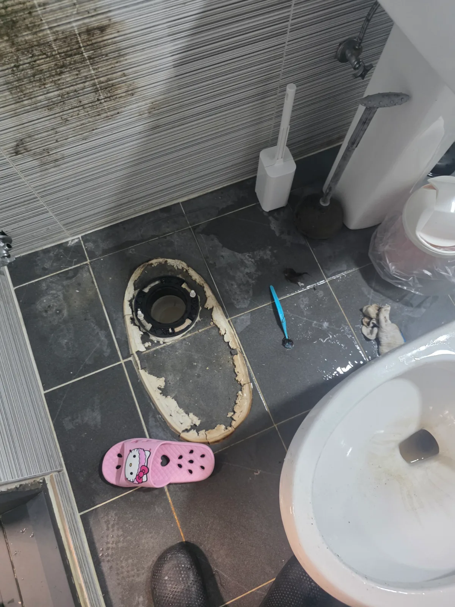

종로구 동숭동 변기막힘, 현장 도착 후 진단
이번에 저희 신라건축설비가 작업한 곳은 종로구 동숭동입니다. 변기막힘의 원인은 안쪽에 들어가 있던 청소솔이었습니다.
청소솔은 화장실에서 흔히 쓰는 도구지만, 변기 안에 들어가면 물길을 막는 장애물이 될 수 있습니다. 이번에는 청소를 도와줄 물건이 막힘의 주인공이 된 셈이죠.
손잡이가 달린 단단한 물건은 변기의 굴곡진 배수 통로에 걸릴 수 있습니다. 물건의 형태와 위치에 따라 꺼내는 방법도 달라지는데, 이번 현장에서는 변기를 탈거해 청소솔을 회수하는 작업을 진행했습니다.
1단계: 증상 확인과 필요한 장비 작업
변기를 바닥에서 분리하고, 물탱크와 변기 본체를 나눈 상태에서 작업했습니다. 본체를 들어내자 하부 배출구와 바닥 오수관 연결부가 드러났습니다.
변기를 탈거하면 평소에는 바닥에 가려져 있던 아래쪽 배출구에도 접근할 수 있습니다. 이번 작업에서는 이렇게 변기를 분리해 안쪽에 들어간 청소솔을 꺼낼 수 있도록 했습니다.
변기막힘이라고 모두 탈거하는 것은 아닙니다. 이물질이 걸린 위치와 회수 가능성에 따라 작업 범위를 판단하는 것이 중요합니다.

2단계: 원인 구간 처리와 정상 작동 확인
탈거한 변기에서 파란색 청소솔을 꺼냈습니다. 손잡이와 솔 머리가 붙어 있는 형태 그대로 회수됐고, 실제 물건을 통해 막힘 원인을 확인할 수 있었습니다.
바닥에 놓고 보면 작은 청소 도구 하나입니다. 하지만 변기 안에서는 물길을 가로막는 장애물이었죠. 청소솔 하나 때문에 변기를 들어내는 작업까지 이어진 현장이었습니다.
이번에는 변기를 분리해 이물질에 접근하고, 청소솔을 밖으로 꺼내는 방식으로 작업을 마무리했습니다.

작업 결과와 재발 방지 안내
변기 내부에 들어가 있던 청소솔을 회수했습니다. 분리한 변기와 꺼낸 청소솔 사진에 작업 범위와 막힘 원인이 함께 담겨 있습니다.
청소솔과 작은 욕실용품은 변기 안으로 떨어지지 않도록 안정적인 곳에 보관해 주세요. 청소 전후에 도구가 제자리에 있는지 확인하는 습관도 도움이 됩니다.
변기에 물건을 떨어뜨렸다면 추가로 물을 내리거나 안쪽으로 밀어 넣지 않는 것이 좋습니다. 상담할 때는 들어간 물건의 종류와 이후에 물을 내렸는지를 알려주시면 상황을 파악하는 데 도움이 됩니다.
비용을 확인할 때는 이물질 제거뿐 아니라 변기 탈거·재설치·하부 마감이 견적에 포함되는지도 살펴보세요. 작업 범위와 추가 비용 조건을 함께 확인하면 어떤 작업에 비용이 드는지 이해하기 쉽습니다.
최종 조치: 변기 탈거·분해 후 내부에 있던 청소솔 회수.
현장 방문 전 확인하는 비용과 작업 범위
신라건축설비는 현장 증상과 배관 구조를 확인한 뒤 필요한 작업과 예상 비용을 안내합니다. 단순 관통으로 해결되는지, 배관내시경·석션·고압세척 또는 변기 탈거가 필요한지는 현장 상태에 따라 달라집니다. 출장비와 야간 작업비, 추가 장비 비용이 발생할 수 있는 경우 작업 전에 먼저 설명하고 동의를 받은 범위에서 진행합니다.
업체를 선택할 때 확인할 사항
무조건적인 ‘0원’ 표현보다 실제 작업 범위, 추가 비용 조건, 사용 장비와 사후 대응 기준을 확인하는 것이 중요합니다. 해결되지 않았을 때의 비용 기준과 작업 후 동일 증상 발생 시 점검 범위를 사전에 문의해두면 불필요한 분쟁을 줄일 수 있습니다.
종로구 변기막힘 자주 묻는 질문
변기막힘은 왜 반복되나요?
종로구 동숭동 현장처럼 변기 안에 들어간 이물질로 배수가 원활하지 않은 상태. 증상은 원인이 현장마다 다를 수 있습니다. 변기 내부 이물질뿐 아니라 하부 오수관 막힘이나 배관 상태 때문에 반복될 수 있습니다. 같은 변기막힘이 재발하면 막힌 위치와 원인을 다시 확인하는 것이 중요합니다.
변기 물이 안 내려가거나 역류하면 변기뚫는업체를 불러야 하나요?
물이 천천히 내려가거나 수위가 차오르고 변기역류가 반복되면 단순 뚫어뻥보다 전문 장비 점검이 필요한 경우가 있습니다. 현장에서는 증상과 배관 구조를 먼저 확인합니다.
변기 이물질 막힘은 변기를 탈거해야 하나요?
물티슈·청소포·플라스틱·음식물처럼 변기 트랩에 걸린 이물질은 위치에 따라 변기 탈거가 필요할 수 있습니다. 무조건 탈거하지 않고 먼저 막힘 위치를 판단합니다.
변기뚫는업체는 어떤 장비로 작업하나요?
현장 상태에 따라 석션, 에어건, 배관내시경, 변기 탈거 등을 사용합니다. 하부 오수관 문제라면 변기만 뚫는 작업보다 배관 구간 확인이 중요합니다.
변기막힘 비용은 어떻게 정해지나요?
단순 관통인지, 이물질 제거와 변기 탈거가 필요한지, 오수관이나 공용배관 작업이 필요한지에 따라 달라집니다. 추가 장비나 작업이 필요하면 진행 전에 범위와 비용을 안내합니다.
변기에서 냄새가 나거나 물이 자주 차오르는 것도 막힘과 관련 있나요?
악취나 수위 이상이 항상 막힘 때문인 것은 아니지만 배수 불량, 오수관 상태, 연결부 문제와 함께 나타날 수 있습니다. 반복되면 현장 점검으로 원인을 구분해야 합니다.
변기막힘 서울·경기 출동지역
신라건축설비는 종로구 동숭동 현장을 포함해 서울 25개 구와 경기도 31개 시·군의 배관 문제를 상담합니다. 현장 거리와 기사 배정 상황에 따라 출동 가능 여부를 먼저 안내드립니다.
서울 전 지역
강남구 · 강동구 · 강북구 · 강서구 · 관악구 · 광진구 · 구로구 · 금천구 · 노원구 · 도봉구 · 동대문구 · 동작구 · 마포구 · 서대문구 · 서초구 · 성동구 · 성북구 · 송파구 · 양천구 · 영등포구 · 용산구 · 은평구 · 종로구 · 중구 · 중랑구
경기도 주요 출동지역
수원시 · 용인시 · 고양시 · 화성시 · 성남시 · 부천시 · 남양주시 · 안산시 · 평택시 · 안양시 · 시흥시 · 파주시 · 김포시 · 의정부시 · 광주시 · 하남시 · 광명시 · 군포시 · 양주시 · 오산시 · 이천시 · 안성시 · 구리시 · 의왕시 · 포천시 · 양평군 · 여주시 · 동두천시 · 과천시 · 가평군 · 연천군